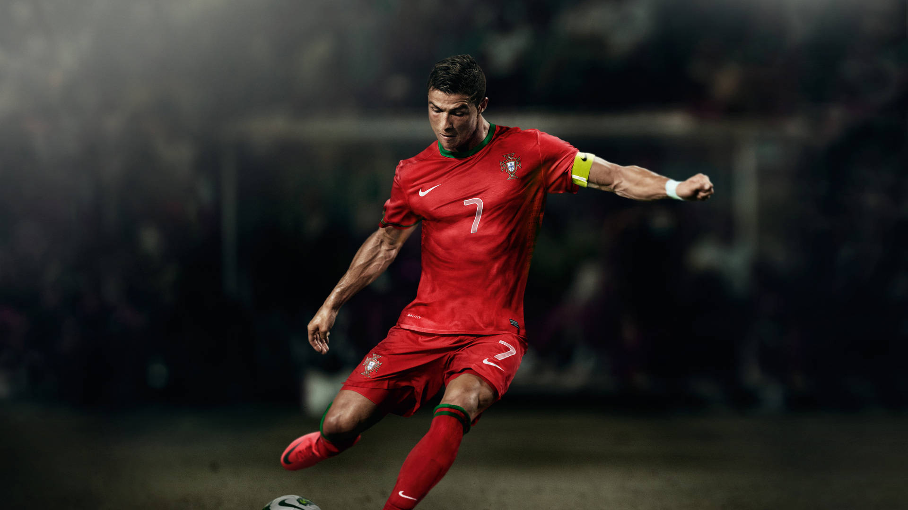

About
Cristiano Ronaldo dos Santos Aveiro, popularly known as Cristiano Ronaldo, CR7 or just Ronaldo, is a Portuguese professional footballer who plays as a forward for and captains both Saudi Professional League club Al Nassr and the Portugal national team.
Career
Ronaldo began his career as a youth player for Andorinha, where he played for two years, before moving to C.D. Nacional. In 1997, he made a move to Portuguese giants Sporting CP.
In 2003, he signed with Manchester United and won three Premier League titles, one UEFA Champions League, and one FIFA Club World Cup during his time there. In 2009, he transferred to Real Madrid for a then-world record transfer fee and went on to win four Champions League titles and four Ballon d'Or awards.
In 2018, Ronaldo signed with Juventus, where he has won two Serie A titles as of 2021.
In 2021, Manchester United announced they had reached an agreement with Juventus to re-sign Ronaldo. The transfer was for an initial £12.85 million, with a two-year contract plus an optional year, and was confirmed on 31 August. But, due to some difficulties with the coach Erik Ten Hag and the senior executives, on 22 November 2022, Ronaldo's contract was terminated by mutual agreement with immediate effect.
On 30 December 2022, Saudi club Al Nassr reached an agreement for Ronaldo to join the club effective 1 January 2023, signing a contract until 2025.
Achievements
- 5 Ballon d'Or awards
- 4 UEFA Champions League titles
- 3 Premier League titles
- 2 Serie A titles
- 1 European Championship with Portugal